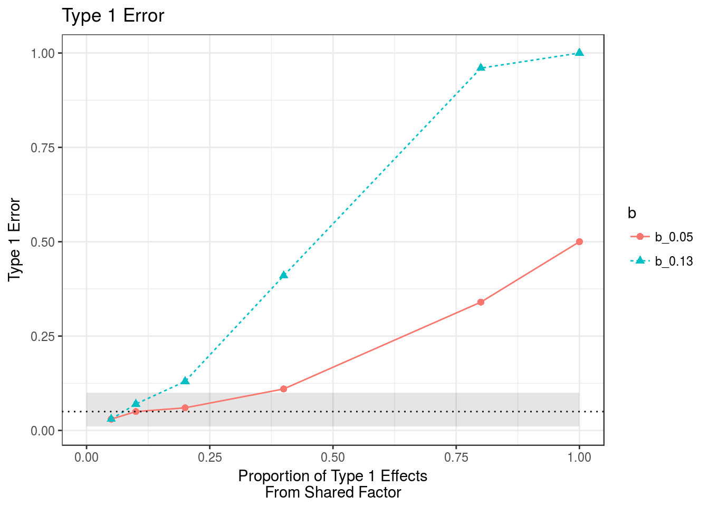

These simulations are intended to understand the effects of co-regulation on our method. The simulation set-up is as follows:
There is some un-known, un-measured factor \(F\) that influences both trait 1 and trait 2. Additionally, trait 1 directly (or through a pathway separate from \(F\)) affects trait 2.
I will vary two parameters: + \(q\): The proportion of trait 1 effects that come through the shared factor + \(b\): The effect size of the shared factor on trait 2
library(ashr)
library(sherlockAsh)
library(tidyr)
q <- 0.2
b <- 0.13
p_f <- 0.07*q
p_1 <- 0.07*(1-q)
#Function for effects on factor
gfn <- normalmix(pi=c(1-p_f, p_f),
mean=rep(0, 2),
sd=c(0, 0.1))
gf <- function(p){ rnormalmix(p, gfn)}
g1n <- normalmix(pi=c(1-p_1, p_1),
mean=rep(0, 2),
sd=c(0, 0.1))
g2n <- normalmix(pi=c(0.9, 0.1),
mean=rep(0, 2),
sd=c(0, 0.05))
g1 <- function(bf){
bf + rnormalmix(length(bf), g1n)
}
g2 <- function(bf, b1){
b*bf + lambda *b1 + rnormalmix(length(bf), g1n)
}
maf.func <- function(p){rbeta(n=p, 1, 5)}library(ggplot2)
qs <- c(0.05, 0.1, 0.2, 0.4, 0.8, 1)
bs <- c(0.05, 0.13)
t1e <- matrix(nrow=length(qs), ncol=2)
for(i in 1:length(qs)){
for(j in 1:2){
res <- readRDS(paste0("../data/res.", qs[i], ".", bs[j], ".0.RData"))
stats <- res$corr[3,,1]/res$corr[3,,2]
t1e[i,j] <- mean(abs(stats) > abs(qnorm(0.975, lower.tail=TRUE)))
}
}
t1e <- data.frame(t1e)
names(t1e) <- c("b_0.05", "b_0.13")
t1e$q <- qs
t1e_long <- gather(t1e, "b", "Type1Error", -q)
n <- 100
c975 <- qbinom(p=0.975, size=n, prob=0.05)/n
c025 <- qbinom(p=0.025, size=n, prob=0.05)/n
v <- seq(0, 1, length.out=1000)
df.shade = data.frame("x"=c(v, rev(v)), "y"=c(rep(c025, 1000), rep(c975, 1000)))
ggplot(t1e_long) +
geom_polygon(data=df.shade, aes(x=x, y=y), alpha=0.1, fill="black") +
geom_point(aes(x=q, y=Type1Error, group=b, color=b, shape=b), size=2) +
geom_line(aes(x=q, y=Type1Error, group=b, color=b, lty=b)) +
geom_hline(yintercept = 0.05, lty=3) +
xlab("Proportion of Type 1 Effects\nFrom Shared Factor") + ylab("Type 1 Error") + ggtitle("Type 1 Error") +
theme_bw()
This R Markdown site was created with workflowr